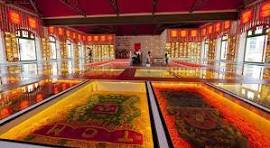
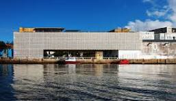

Paço do Frevo

O Paço do Frevo é um espaço cultural localizado no Recife Antigo, dedicado à preservação e divulgação do frevo, uma das expressões culturais mais importantes de Pernambuco. O local oferece exposições, apresentações artísticas e cursos relacionados ao frevo.
Cais do Sertão

O Cais do Sertão é um museu interativo que retrata a cultura e a história do sertão nordestino, com foco na vida e na obra de Luiz Gonzaga, o Rei do Baião. O museu apresenta exposições permanentes e temporárias, além de oferecer atividades educativas e culturais.